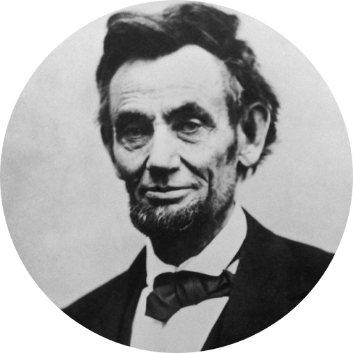

Abraham Lincoln
12 February, 1809 - 15 April, 1865

Abraham Lincoln's Exemplary Works - Do what you can, with what you have, where you are.
Abraham Lincoln made the decision to fight to prevent the nation from splitting apart.
Abraham Lincoln was an unfaltering commander in chief during the Civil War which preserved the United States as one nation.
Abraham Lincoln's foreign policy was successful in preventing other countries from intervening in America's Civil War.
Abraham Lincoln issued the Emancipation Proclamation which began the process of freedom for America's slaves. The document also allowed black soldiers to fight for the Union.
Abraham Lincoln was a strong supporter of the Thirteenth Amendment that formally ended slavery in the United States.
Legislation Abraham Lincoln signed into law included the Homestead Act, the Morrill Act, the National Banking Act, and a bill that chartered the first transcontinental railroad.
Abraham Lincoln set an example of strong character, leadership, and honesty which succeeding presidents tried to emulate. Barack Obama stated during his campaign that he would look to Lincoln as a model.
Abraham Lincoln gave a series of great speeches before and during his presidency including the House Divided Speech, the Cooper Union Address, the First Inaugural Address, the Gettysburg Address, and the Second Inaugural Address.
Abraham Lincoln wrote a series of famous letters including the letters to Grace Bedell, Horace Greeley, Fanny McCullough, and Lydia Bixby.
Abraham Lincoln's quotes are among the most famous quotes in the world.